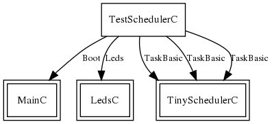

TestScheduler is a simple scheduler test that posts three CPU intensive tasks of different durations. It is not intended to be of great use to TinyOS programmers; rather, it is a sanity check for schedulers. For details and information on how to replace the scheduler, refer to TEP 106.
